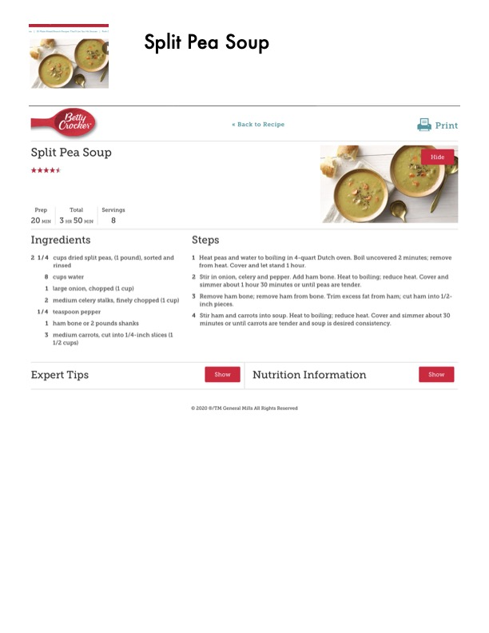

Split Pea Soup

Original cookbook page 134
Ingredients
- 2 1/4 cups dried split peas, (1 pound), sorted and
- rinsed
- 8 cups water
- 1 large onion, chopped (1 cup)
- 2 medium celery stalks, finely chopped (1 cup)
- 1/4 teaspoon pepper
- 1 ham bone or 2 pounds shanks
- 3 medium carrots, cut into 1/4-inch slices (1
- 1/2 cups)
- Expert Tips
- Back to Recipe =a Print
- 1 Heat peas and water to boiling in 4-quart Dutch oven. Boil uncovered 2 minutes; remove
- 2 Stir in onion, celery and pepper. Add ham bone. Heat to boiling; reduce heat. Cover and
- 3 Remove ham bone; remove ham from bone. Trim excess fat from ham; cut ham into 1/2-
- 4 Stir ham and carrots into soup. Heat to boiling; reduce heat. Cover and simmer about 30
Instructions
- nas 35 Make-Ahead Brunch Recipes That Let You Hit Snooze | Pork
- Ingredients 2 1/4 cups dried split peas, (1 pound), sorted and rinsed 8 cups water 1 large onion, chopped (1 cup) 2 medium celery stalks, finely chopped (1 cup) 1/4 teaspoon pepper 1 ham bone or 2 pounds shanks
- 3 medium carrots, cut into 1/4-inch slices (1 1/2 cups)
- Steps 1 Heat peas and water to boiling in 4-quart Dutch oven.
- Boil uncovered 2 minutes; remove from heat.
- Cover and let stand 1 hour.
- 2 Stir in onion, celery and pepper.
- Heat to boiling; reduce heat.
- Cover and simmer about 1 hour 30 minutes or until peas are tender.
- 3 Remove ham bone; remove ham from bone.
- Trim excess fat from ham; cut ham into 1/2- inch pieces.
- 4 Stir ham and carrots into soup.
- Cover and simmer about 30 minutes or until carrots are tender and soup is desired consistency.
Recipe #134 from collection